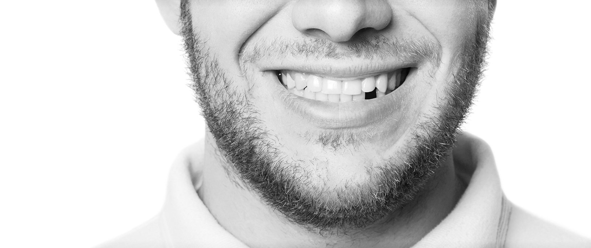

Neleiskite, kad prarasti dantys
Taptų nuosprendžiu!
Kodėl netenkame dantų?
01
 Periodonto ligos
Periodonto ligos
 Ėduonis ir kiti danties pažeidimai
Ėduonis ir kiti danties pažeidimai

Fizinės traumos
Klaidingas įsitikinimas, esą dantų netenka tik vyresnio amžiaus žmonės.
Iš tiesų vieną ar daugiau dantų yra praradęs kas antras vyresnis nei 25
metų lietuvis! Dažna dantų neteikimo priežastis – bet kokio amžiaus
pacientams gresiančios periodonto ligos, ypač giliųjų burnos audinių
infekcija periodontitas, kuri lemia žandikaulio kaulo nykimą.
Į dantis kėsinasi ir nepastebimai prasidėjęs ėduonis: neaptiktas šis
lėtinis susirgimas paveikia vidinius danties audinius ir gali lemti danties
netekimą.
Kita dažna dantų praradimo priežastis, kurios aukomis neretai tampa
aktyviai sportuojantys žmonės – įvairios dantų traumos